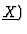
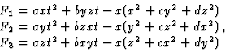
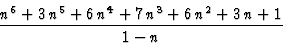
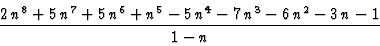
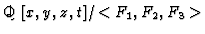

-monomials) which can be very useful to get several informations about the properties of the set of
[c,d,1,d2-c,c2-d,cd-1,c4d+cd4-2 c2d2-c3-d3+2 cd,c3+d3-3 cd+1,d2,cd-1,c2-d, cd-1,1,4 cd-d3-1+c4d+cd4-3 c2d2-c3,4cd-d3-1+c4d+cd4-3 c2d2-c3, c3-2 cd+1,d3-2 cd+1,1,4 cd-d3-1+c4d+cd4-3 c2d2-c3,cd3-c2d-d2+c, c2d2-2cd+1,c3d-c2-cd2+d,1 ]
[x2z,x2y,x3,zy3,xy2z,xy3, y2z3,xyz3,x2z3,y4z,y4z,
y5,x2y3,yz5,xz5,y3z3, xy2z3 ,x2yz3,z7,y2z5, y2z5,y2z5,
x2z5]


For the first case, we have computed a Grobner Basis that specializes correctly for any value of the parameters verifying [c=0,d=1]. This allows to get information about the solution set of the considered system by performing, for example, parametric computations into the quotient ring

$"> (no need of taking care about the values of a and b).